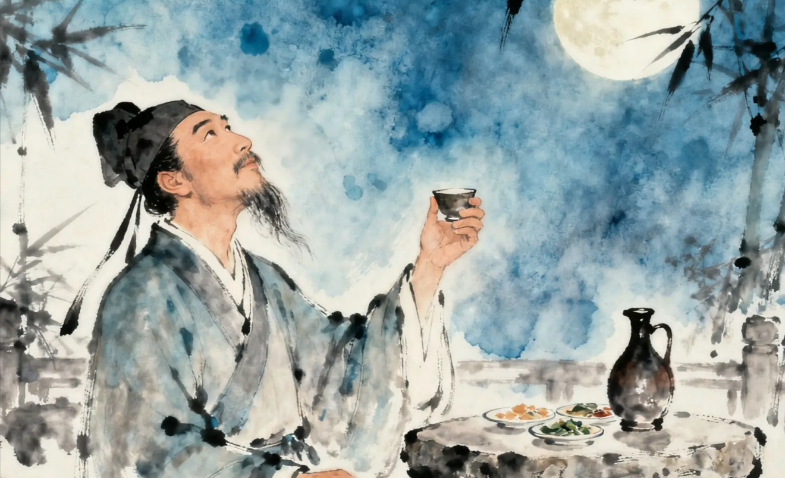

宋词简介 | 苏轼 | 李清照 | 辛弃疾 | 陆游 | 柳永

苏轼，（1037年1月8日-1101年8月24日）字子瞻、和仲，号铁冠道人、东坡居士，世称苏东坡、苏仙，汉族，眉州眉山（四川省眉山市）人，祖籍河北栾城，北宋著名文学家、书法家、画家，历史治水名人。与父苏洵、弟苏辙三人并称“三苏”。苏轼是北宋中期文坛领袖，在诗、词、散文、书、画等方面取得很高成就。文纵横恣肆；诗题材广阔，清新豪健，善用夸张比喻，独具风格，与黄庭坚并称“苏黄”；词开豪放一派，与辛弃疾同是豪放派代表，并称“苏辛”；散文著述宏富，豪放自如，与欧阳修并称“欧苏”，为“唐宋八大家”之一。苏轼善书，“宋四家”之一；擅长文人画，尤擅墨竹、怪石、枯木等。 与韩愈、柳宗元和欧阳修合称“千古文章四大家”。作品有《东坡七集》《东坡易传》《东坡乐府》《潇湘竹石图卷》《古木怪石图卷》等。
苏轼是北宋文坛的领袖，诗、词、文、书、画无一不精，是中国文学史上罕见的全才。他与父亲苏洵、弟弟苏辙并称 "三苏"，位列 "唐宋八大家"。
在词的创作上，苏轼具有划时代的意义。他打破了词为 "艳科" 的传统，开创豪放词派，将怀古、咏史、说理、田园等题材引入词中，扩大了词的表现境界。《念奴娇・赤壁怀古》《水调歌头・明月几时有》等作品，气势磅礴，襟怀旷达，成为豪放词的典范。他的婉约词如《江城子・十年生死两茫茫》，情感深挚，同样感人至深。
苏轼的诗歌与黄庭坚并称 "苏黄"，以理趣见长，善于从日常生活中提炼哲理，《题西林壁》《饮湖上初晴后雨》等作品清新自然，意蕴深远。他的散文汪洋恣肆，明白畅达，《赤壁赋》《记承天寺夜游》堪称散文精品。
苏轼以旷达超脱的人生态度和博大精深的艺术修养，将宋代文学推向高峰，对后世文学、美学乃至士人精神都产生了不可估量的影响。
—————— 《水调歌头·明月几时有》|《念奴娇·赤壁怀古》|《江城子·密州出猎》
|《定风波·莫听穿林打叶声》|《江城子·十年生死两茫茫》——————
明月几时有？把酒问青天。
不知天上宫阙，今夕是何年。
我欲乘风归去，又恐琼楼玉宇，高处不胜寒。
起舞弄清影，何似在人间。
转朱阁，低绮户，照无眠。
不应有恨，何事长向别时圆？
人有悲欢离合，月有阴晴圆缺，此事古难全。
但愿人长久，千里共婵娟。
大江东去，浪淘尽，千古风流人物。
故垒西边，人道是，三国周郎赤壁。
乱石穿空，惊涛拍岸，卷起千堆雪。
江山如画，一时多少豪杰。
遥想公瑾当年，小乔初嫁了，雄姿英发。
羽扇纶巾，谈笑间，樯橹灰飞烟灭。
故国神游，多情应笑我，早生华发。
人生如梦，一尊还酹江月。
老夫聊发少年狂，左牵黄，右擎苍，
锦帽貂裘，千骑卷平冈。
为报倾城随太守，亲射虎，看孙郎。
酒酣胸胆尚开张，鬓微霜，又何妨！
持节云中，何日遣冯唐？
会挽雕弓如满月，西北望，射天狼。
莫听穿林打叶声，何妨吟啸且徐行。
竹杖芒鞋轻胜马，谁怕？一蓑烟雨任平生。
料峭春风吹酒醒，微冷，山头斜照却相迎。
回首向来萧瑟处，归去，也无风雨也无晴。
十年生死两茫茫，不思量，自难忘。
千里孤坟，无处话凄凉。
纵使相逢应不识，尘满面，鬓如霜。
夜来幽梦忽还乡，小轩窗，正梳妆。
相顾无言，惟有泪千行。
料得年年肠断处，明月夜，短松冈。
©2026年终末列车组 联系我们